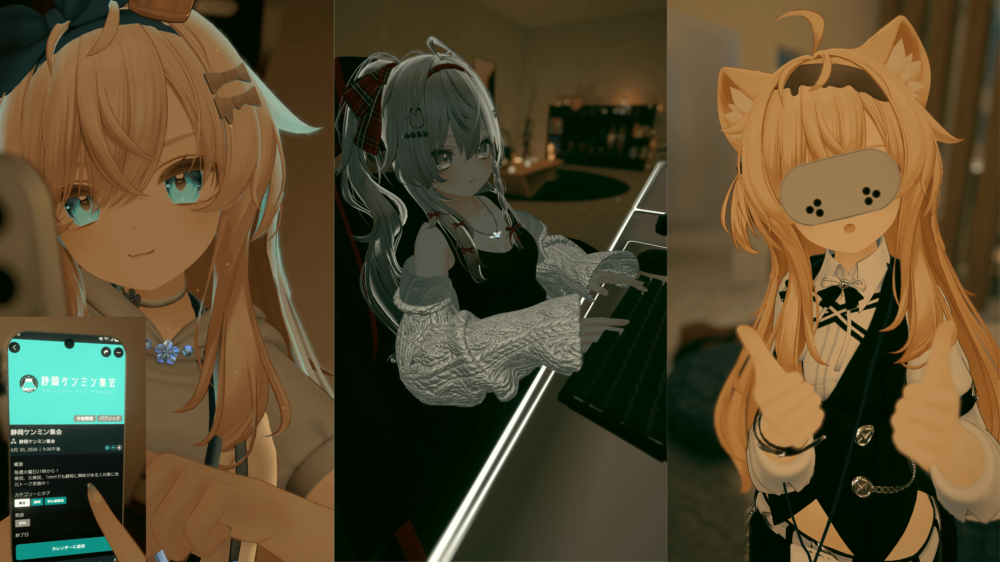
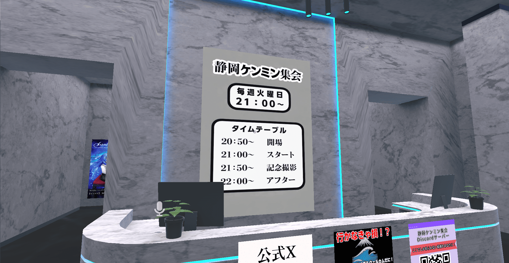
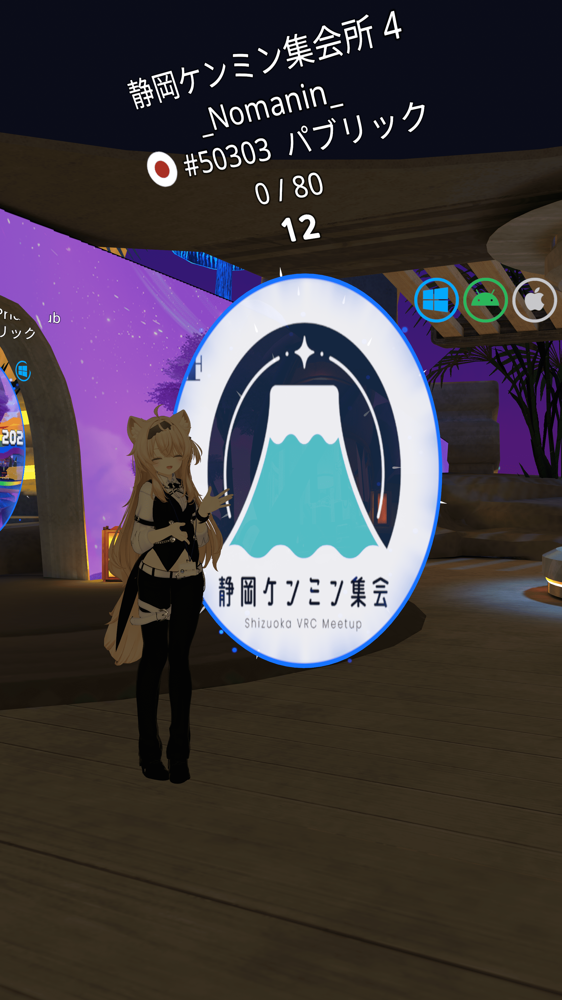
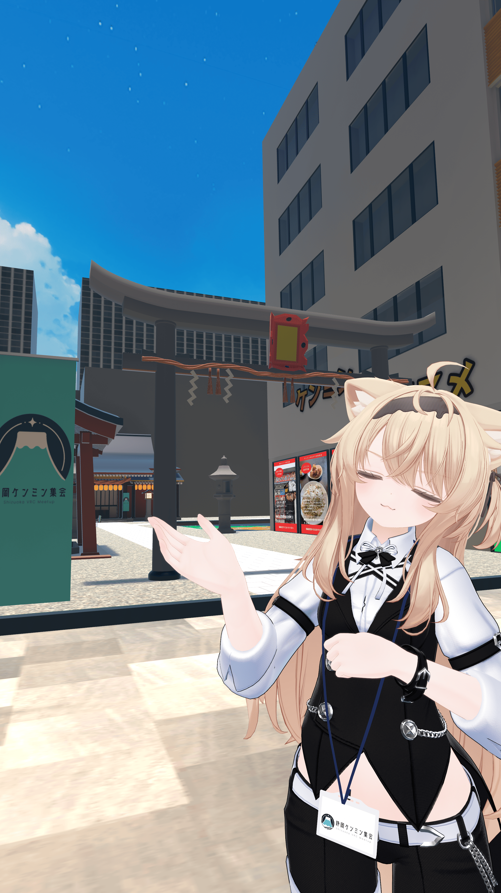

静岡ケンミン集会は「VRChat」内で開催される交流イベントです 参加される場合「VRChat」をプレイできる環境 (PC/スマ－トフォン/HMD(ヘッドマウントディスプレイ)) いずれかが必要になります。


毎週火曜日21時～22時
・20:50 開場 ・21:00 スタート ・21:50 記念撮影 ・22:00 アフター

VRChatをプレイできる環境の準備 (PC/スマ－トフォン/HMD)
おその106へフレンド申請 または静岡ケンミン集会グループに参加
開始時間になりましたらおその106へジョイン または静岡ケンミン集会のグループインスタンスへ


の無料アイコン素材 2.png)